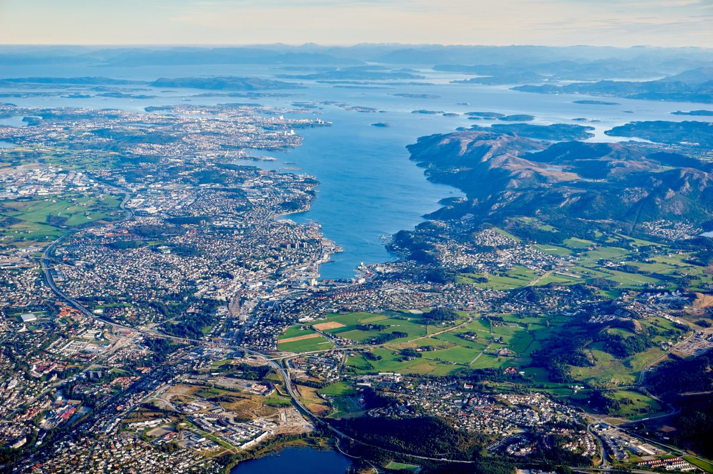

Qytetet
Qytetet e Norvegjisë janë pak më ndryshe nga shumë vende të tjera. Le të hedhim një vështrim të thelluar në gjithçka që mund të dëshironi të dini për qytetet më të mëdha Norvegjeze. Kur bëhet fjalë për Norvegjinë, qendra e vëmendjes ka tendencë të bjerë në fijet e bukura. Në rast se nuk arrijnë, atëherë janë vargmalet malore ose dritat veriore që vallëzojnë në veri. Cilindo mënyrë të shikoni, Norvegjia rurale rezulton e madhe. Sidoqoftë, shumica e popullsisë së Norvegjisë harxhon të jetojë dhe të punojë në zona urbane. Le të hedhim një vështrim se si janë qytetet më të mëdha Norvegjeze në të vërtetë...
Oslo
The capital city of Norway, Oslo is the prime stop for urban living in Norway. Being the major transportation hub in the country, if you’re visiting or moving here chances are you will set foot in Oslo on at least part of your trip.